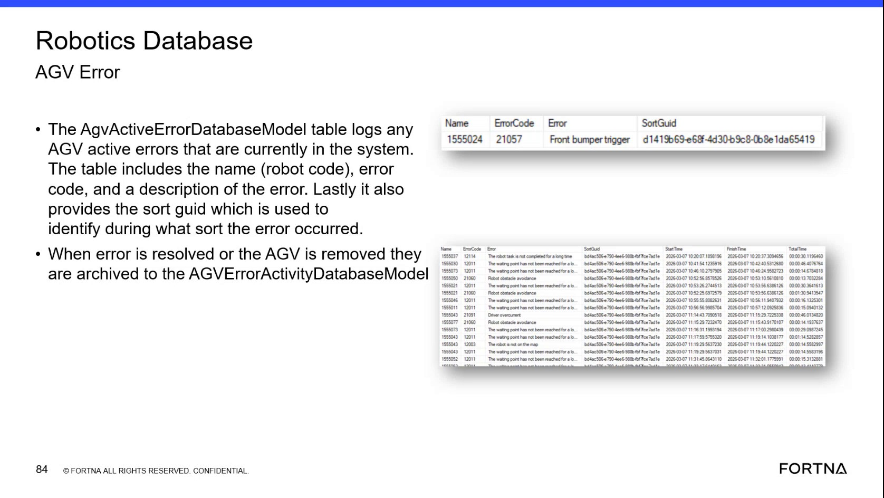

| Procedure ID | proc_diagnose_active_agv_errors_in_the_robotics_database_v1 |
|---|---|
| Title | Diagnose Active AGV Errors in the Robotics Database |
| Procedure Type | diagnostic |
| Primary Role | L2_support |
| Support Safe | Yes |
| Capability Tags | agv_active_errors |
| Access Surface | wcs_sql |
| Audience Roles | L2_support |
| Failure Pattern Tags | bump_fault |
| Validation Status | needs_sme_review |
| Merge Status | source_finalized |
Use read-only SSMS access to the WCS / Helix DB (SSMS) Robotics database to inspect current AGV active-error records and identify the affected robot code, error code, description, and SortGuid. When an error is resolved or an AGV is removed, verify that the record is archived to AGVErrorActivityDatabaseModel with available timing fields.
Use the WCS / Helix DB (SSMS) Robotics database when an AGV error must be correlated to the affected robot code, error code, error description, and sort during which the error occurred.

Responsible role: L2_support
Instruction:
In WCS / Helix DB (SSMS), open the Robotics database and locate the AgvActiveErrorDatabaseModel table.
Expected result:
The AgvActiveErrorDatabaseModel table is available for read-only inspection and exposes the active-error fields used for correlation.
Stop or Escalate If:
Responsible role: L2_support
Instruction:
In the AgvActiveErrorDatabaseModel table in WCS / Helix DB (SSMS), check whether a row is present for the affected AGV. Use the Name field as the robot code and inspect ErrorCode, the error description, and SortGuid.
Expected result:
The result shows either no active-error row for the affected AGV or a row containing the robot code, error code, error description, and SortGuid.
Stop or Escalate If:
Responsible role: L2_support
Instruction:
From the active-error row in WCS / Helix DB (SSMS), capture the Name robot code, ErrorCode, error description, and SortGuid. For example, the source shows error code 21057 with the description "Front bumper trigger." Use SortGuid as the identifier for the sort during which the error occurred.
Expected result:
The diagnostic record contains the affected robot code, active error code, description, and SortGuid, including the sort association when the active row provides it.
Stop or Escalate If:
Responsible role: L2_support
Instruction:
After the error is resolved or the AGV is removed, recheck AgvActiveErrorDatabaseModel in WCS / Helix DB (SSMS) and verify that the record is no longer an active-error row. Then inspect AGVErrorActivityDatabaseModel for the archived record and available Start Time, Finish Time, and Total Time fields.
Expected result:
The resolved or removed error is absent from the active-error table and is present in AGVErrorActivityDatabaseModel with Start Time, Finish Time, and Total Time when those fields are available.
Stop or Escalate If: